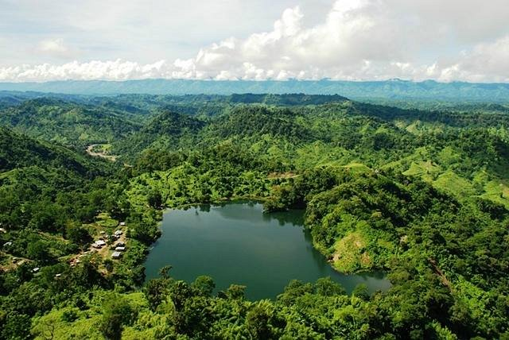
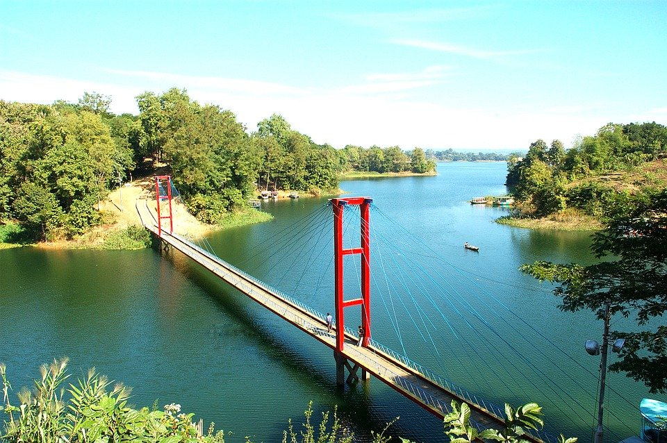
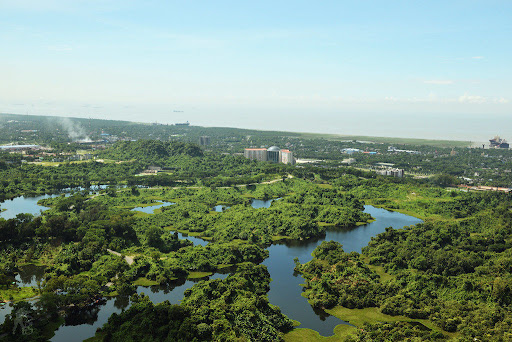

1. Cox's Bazar Beach
Cox's Bazar (/ˌkɒksɪz bəˈzɑː/; Bengali: কক্সবাজার, romanized: Kaksabājāra; pronounced [kɔksbadʒaɾ]) is a city, fishing port, tourism centre, and district headquarters in southeastern Bangladesh. It is famous mostly for its long natural sandy beach. It is located 150 km (93 mi) south of the city of Chittagong. Cox's Bazar is also known by the name Panowa, which translates literally as "yellow flower". Another old name was "Palongkee". It has the longest sea beach in the world. The modern Cox's Bazar derives its name from Captain Hiram Cox, an officer of the British East India Company, a Superintendent of Palongkee outpost. To commemorate his role in refugee rehabilitation work, a market was established and named after him. The city covers an area of 23.4 km2 (9.0 sq mi) with 27 mahallas and 9 wards and as of 2011 had a population of 265,500.[1] Cox's Bazar is connected by road and air with Chittagong.

2. Boga Lake
Boga Lake, also known as Bagakain (বগাকাইন) Lake, is the most beautiful natural lake in Bangladesh. It is 18 km away from Ruma Sadar Upazila in Bandarban. The area of this lake is about 15 acres. It is approximately 1800 feet above sea level. The color of its water is blue. Behind creation of this lake there are many mythological stories. Many tourist visit Boga lake mostly during winter. Localities of small tribe community like Bawm, Khumi can be found besides the Boga Lake. Strolling becomes difficult in the rainy season.
3. Nilgiri Mountains
The Nilgiri Mountains form part of the Western Ghats in western Tamil Nadu, India. At least 24 of the Nilgiri Mountains' peaks are above 2,000 metres (6,600 ft), the highest peak being Doddabetta, at 2,637 metres (8,652 ft). The Nilgiri Biosphere Reserve is located here. Tribal people of the Nilgiri hills include Badagas, Todas, Kotas, Irullas and Kurumbas. They mainly depend on forest for their day-to-day life. They occupy forested regions where for a long period in their history, they lived in isolation but in harmony with nature. They demonstrate significant knowledge of the forest including varied species of flora and fauna and relate to the forest very well. Although the Badagas had adapted to the outer world and had developed a lot the other tribes remain the same.

4. Saint Martin Island
St. Martin's Island (Bengali: সেন্ট মার্টিন্স দ্বীপ) is a small island (area only 3 km2) in the northeastern part of the Bay of Bengal, about 9 km south of the tip of the Cox's Bazar-Teknaf peninsula, and forming the southernmost part of Bangladesh. There is a small adjoining island that is separated at high tide, called Chera Dwip. It is about 8 kilometres (5 miles) west of the northwest coast of Myanmar, at the mouth of the Naf River. A research by the Department of Environment (DoE), with the assistance of the UNDP, mentions that the island has a number of eco-systems, coral rich areas, mangroves, lagoons and stony areas. The island is a safe haven to various species of fauna. The presence of 153 species of sea weeds, 66 species of coral, 187 species of oysters, 240 species of fish, 120 species of birds, 29 species of reptiles and 29 species of mammals were recorded at the St Martin's Island in 2010.

5. Patenga Beach
Patenga is a sea beach located 14 kilometres south of the port city of Chittagong, Bangladesh. It is near the mouth of the Karnaphuli River. Patenga beach is one of the most popular beaches of Bangladesh, stretching for miles near at the meeting place of the Bay of Bengal and the river Karnaphuli. Nature lovers come around here to enjoy the scenic beach area to gateway from busy city life and breath in fresh air. Patenga is a popular tourist spot. The beach is very close to Bangladesh Naval Academy of Bangladesh Navy, and Shah Amanat International Airport. The beach width is narrow and swimming in the seas is not recommended. Part of the seashore is built-up with concrete walls. Also large blocks of stones have been laid out to prevent erosion. During 1990s a host of restaurants and kiosks have sprouted out around the beach area. Lighting of the beach area has enhanced the security aspect of visiting in the night. People rise up early in the morning to witness the beautiful sunrise. Patenga Beach lies approximately twenty kilometers outside the city of Chittagong, and is located near to fascinating landmarks including the Shah Amanat International Airport and the BNS Isha Khan Naval Base. It is located at the Karnaphuli River mouth and stretches to the Bay of Bengal.

6. Kaptai Lake
Kaptai Lake is the largest lake in Bangladesh.[1] It is located in the Kaptai Upazila under Rangamati District of Chittagong Division. The lake was created as a result of building the Kaptai Dam on the Karnaphuli River, as part of the Karnaphuli Hydro-electric project. Kaptai Lake's average depth is 100 feet (30 m) and maximum depth is 490 feet (150 m). Construction of the reservoir for the hydro-electric plant began in 1956 by the Government of East Pakistan.[2] As a result, 54,000 acres (220 km2) of farmland in the Rangamati District went underwater and created the lake. The hydro-electric project was funded by the United States. The project was finished in 1962. International Engineering Company and Utah International Inc. received the contract for construction of the dam. The dam is 670.8 meters long, and 54.7 meters high. The dam has a 745 feet (227 m) long spillway containing 16 gates. Through the spillway 5,250,000 cu ft/s (149,000 m3/s) of water can pass.
7. Bhatiary Lake
Bhatiari is a place situated at Bhatiari Union in Sitakunda, Chittagong. It is famous for tourism spot in Chittagong. The place is surrounded by several lakes and hills. The hilly area in Bhatiary is under control of Bangladesh Army. Bhatiari is known for its natural environment.[citation needed] The main tourism spot of Bhatiary is the hills. People gather here in the afternoon to see the sunset from the top of the hill.[citation needed] The Hathazari-Bhatiary link road connects Bhatiary to Rangamati or Khagrachari. This road is maintained by Bangladesh Army. There is also a golf club in Bhatiray area which is also a tourist attraction.
8. Nafa-khum
Nafa-khum (Bengali: নাফাখুম) is a waterfall in Bangladesh on the Remaikree River, a tributary of the Sangu River. It is among the largest waterfalls in the country by volume of water falling. The wild hilly Remaikree river suddenly falls down here about 25–30 feet or 7.62-9.144 meters. The word Ngafa (ঙাফা) in native Marma language means Baghair fish/ Dwarf goonch and "Khong" means "Ground". A special type of flying fish, whose local name is nating, is found at the bottom in a small cave as they swim against the stream but cannot jump over the height of the fall. The falls are located in a remote area two hours' walking distance from Remakree bazar, Thanchi Upazila, Bandarban District. In the rainy season while water level increases, navigation by boat to Ngafakhong is about 20–25 minutes journey which can be hired from Remaikree estuary. Remakree is located three hours by boat on the Sangu River from Tindu, which is itself three hours by boat from Thanchi. Ngfa-Khong is a very popular as a tourist destination. But due to increasing number of mass touring the surrounding ecology has been deteriorated these days.

9. Buddha Dhatu Jadi
The Buddha Dhatu Jadi (Bengali: বুদ্ধ ধাতু জাদি; Burmese: ဗုဒ္ဓဓာတုစေတီ also known as the Bandarban Golden Temple) is located close to Balaghata town, in Bandarban City, in Bangladesh. Dhatu are the material remains of a holy person, and in this temple the relics belong to Buddha. It is the largest Theravada Buddhist temple in Bangladesh and has the second-largest Buddha statue in the country. The Bandaban Golden Temple belongs to the Theravada Buddhism order, which is practiced by the Marma indigenous people, a dominant ethnic group of Bandarban. It was built in 2000 in Arakanese architecture, an adoption of the South East Asia style. Bandarban has a large ethnic population of Buddhists. Buddhism is practiced by a small percentage of 0.7 in Bangladesh, predominantly a Muslim country. Buddhism is the third-largest religion in Bangladesh and the practice is of Theravada Buddhism; most Buddhists are from the south-eastern district of Chittagong and Chittagong Hill Tracts. In Bangladesh, the Theravada Buddhism, now practiced as "Sangharaj Nikaya", was introduced in the late 19th century, replacing many of the old forms of Buddhism practiced till then. The credit for this is given to Ven. Saramedha, known popularly as "Sangharaj". The ethnic population of the town belongs mostly to Marma, an indigenous group of the Chittagong hill region on the eastern end of the country. They are of Arakanese descent and Buddhists by religion, and are the second-largest indigenous group in the hill districts of Bangladesh.

10. Amiakhum
Amiakhum Waterfall is a magnificent waterfall located in Thanchi upazila of Bandarban district. It is one of the most inaccessible places in Bangladesh. The stream of cold water is coming down at a tremendous speed, spreading milky white foam over the green hills and stone barriers. Tourists are mesmerized by the sound of falling water and the sound of flowing waves in the pure nature far away from the locality. The Amiakhum (Omiakhum) Falls near the Bangladesh-Myanmar border is known to many as the land of Bengal. Fascinated by the waterfall, some have called it the most beautiful waterfall in Bangladesh. Bandarban is impeccable wonder. Here is the infinite wonder of nature hidden in the twists and turns. This awe-inspiring nature will bring you face to face with a vast array of mysteries of creation. Bandarban is also a thrilling place for adventure lovers. Here the sky-touching mountains, the green deep forest and the waterfalls hidden in it, the wild will make you intoxicated with a joy-laugh-cry-surge. Amiakhum is a spectacular and thrilling waterfall of Bandarban.

11. Keokradong
Keokradong is a peak located in Bandarban, Bangladesh, with an elevation of 986 metres (3,235 ft). Some sources claim it as the highest point of Bangladesh. On the top of Keokradong there is a small shelter and a signboard put up by Bangladesh Army proclaiming the elevation to be 967 metres (3,173 ft). Height measured by handheld GPS shows it is 986 metres (3,235 ft) with 3m accuracy. There is a controversy about the highest point of Bangladesh, and some sources indicate Saka Haphong as the most elevated peak of the country. However, Tazing Dong is officially recognized as the highest point of Bangladesh. Keokradong is a popular tourist attraction in Bangladesh for mountaineers. Keokradong is one of the cloudiest places in Bangladesh.

12. Sajek Valley
Sajek Valley (Bengali: সাজেক উপত্যকা) is one of the popular tourist spots in Bangladesh situated among the hills of the Kasalong range of mountains in Sajek union, Baghaichhari Upazila in Rangamati District.[3] The valley is 2,000 feet (610 m) above sea level. Sajek valley is known as the Queen of Hills & Roof of Rangamati. The name of Sajek Valley came from the Sajek River that originates from Karnafuli river. The Sajek river works as a border between Bangladesh and India. Sajek valley is known for its natural environment and is surrounded by mountains, dense forest, and grassland hill tracks. Many small rivers flow through the mountains among which the Kachalong and the Machalong are notable. On the way to Sajek valley, one has to cross the Mayni range and the Mayni river. The road to Sajek has high peaks and falls. he native people of Sajek valley are ethnic minorities. Among them Chakma, Marma, Tripura, Pankua, Kaibarta, Lushai, other indigenous Assamese communities, and Sagma are mentionable. Women seem to be more involved in economic activities here.[citation needed] Tea stalls, food joints and roadside marketplaces are dominated by women.[citation needed] Picking fruits and vegetables early in the morning is a common trade here.

13. Marine Drive
Cox’s Bazar–Teknaf Marine Drive is an 80-kilometre-long road from Cox’s Bazar to Teknaf along the Bay of Bengal and it is the world’s longest marine drive.[1] It was inaugurated on May 6, 2017, by Prime Minister Sheikh Hasina. It was constructed by 16th Engineer Construction Battalion of Bangladesh Army, under the supervision of Bangladesh Roads and Highways Department.[3] The construction cost was around ৳1,050 crore (one thousand and fifty crore taka or ten billion and five-hundred million taka) i.e. US$120 million.

14. Mahamaya Lake
Sitakunda (সীতাকুন্ড) is an upazila in Chittagong which is currently at the peak of popularity among tourists. Fountains, mountains, Waterfalls, Beach, clouds, you can enjoy everything from here? Actually, this is the reason why innumerable tourists are going to Sitakundo every day. Some are camping while others are trekking and coming back day after day. Sitakunda has gained more popularity as it is possible to return from Dhaka, Chittagong, Feni, Comilla or any other district in Bangladesh by day trip. Sitakunda Upazila of Chittagong district is a very popular travel destination for those who are thirsty for natural beauty. There are many popular places of interest here. Notable among them are Chandranath Hill, Mahamaya Lake, Guliyakhali Beach, Kumira Ghat, Banshbaria Beach, Jharjhari Jharna Trail, komoldoho Jharna Trail and Sitakunda Ecopark. Mahamaya irrigation project (Bengali: মহামায়া সেচ প্রকল্প) is an irrigation project in Bangladesh situated at Durgapur Union, Mirsharai Upazila, Chittagong. Initiated in the 2007-2008 financial year, the project provides irrigation water to a 3360 hectare area. It cost about 230 million taka and construction was completed in 2009. This project was inaugurated by Prime Minister Sheikh Hasina on 29 December 2010.[1] It is the second largest man made lake in Bangladesh after Kaptai Lake. The project also provided recreational areas. Government is also planning to install a 50 kW mini hydro electric powerplant here.